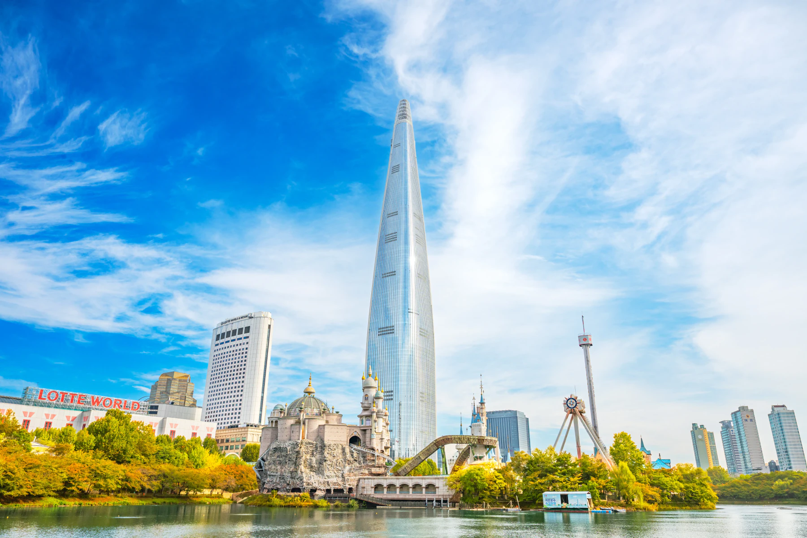
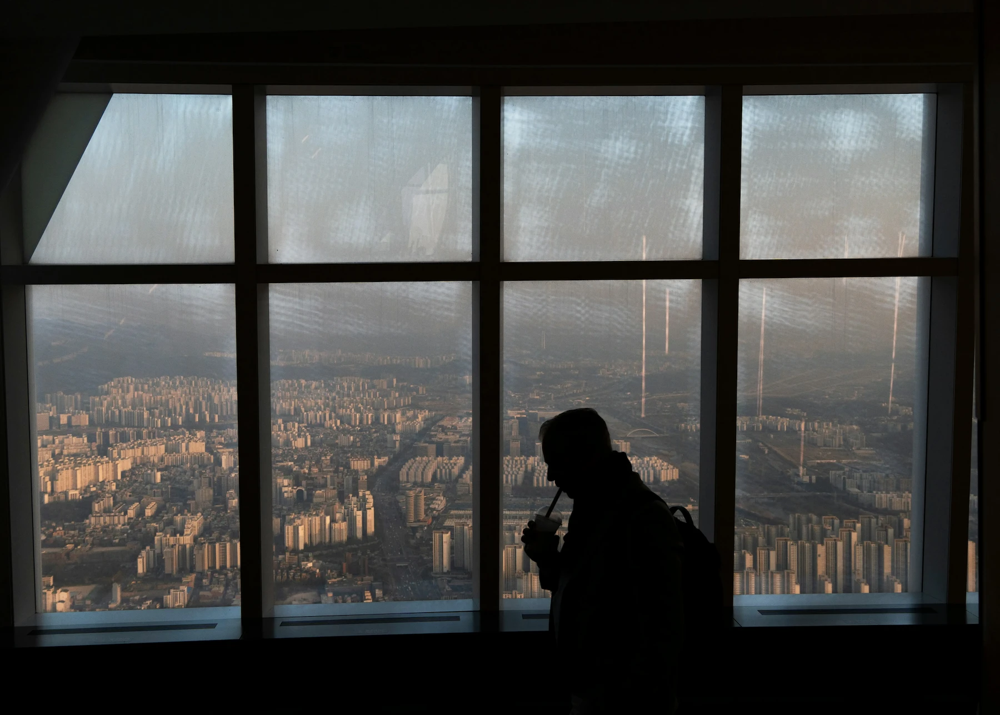
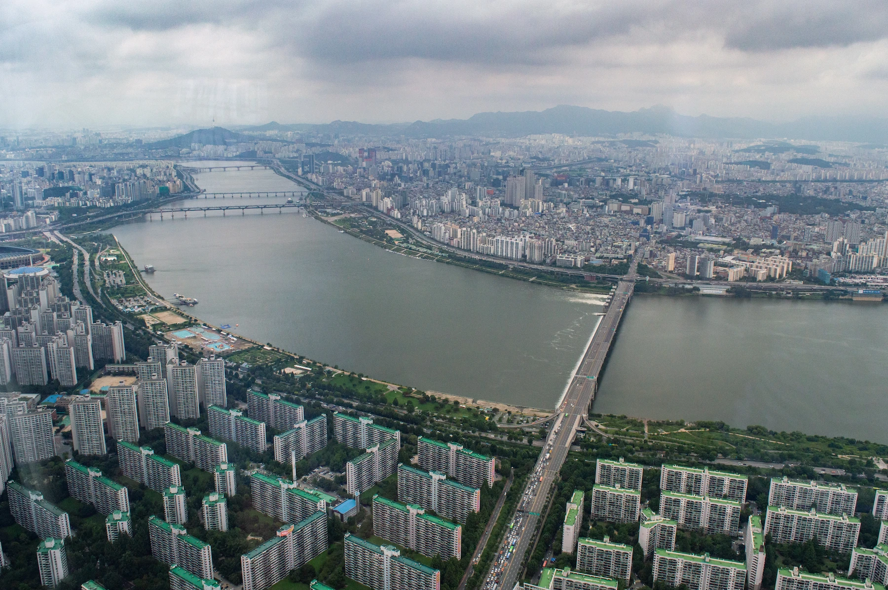
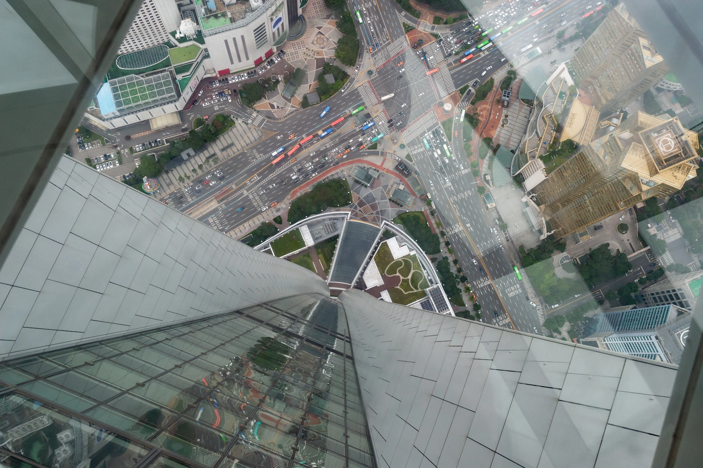
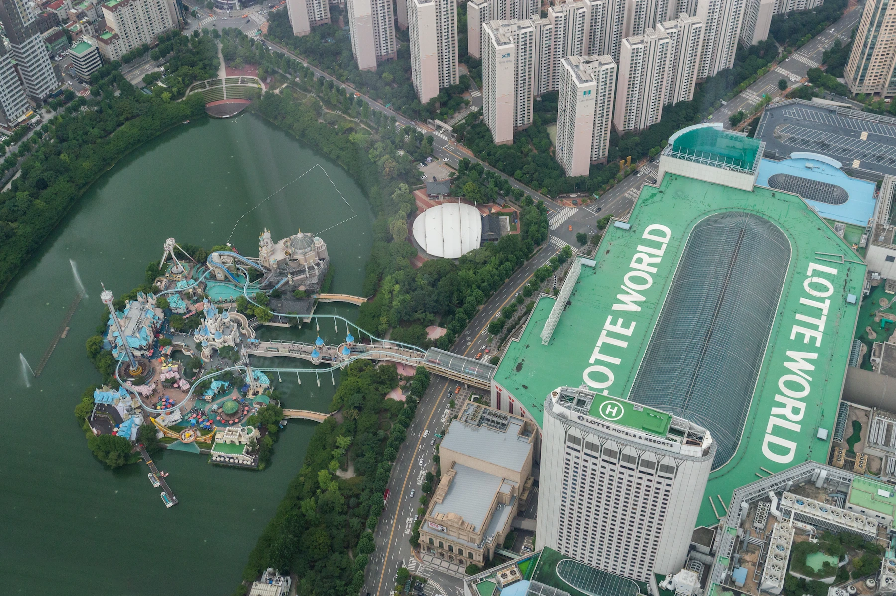

Seoul Skyガイド 2026
チケット、訪れる時間帯、ロッテワールドタワーからの眺め

Seoul Skyは、Lotte World Towerにある有料展望台です。初めてで景色そのものが目的なら、まずは視界の良い日に一般入場券で行くことを基本にします。
昼から夜へ変わる景色を見たいなら夕暮れ。街の形をはっきり見たいなら、よく晴れた昼間でも十分価値があります。天気や自分の予定に合わないのに、夕暮れだけを基準に一日全体を組む必要はありません。
Fast Passは、待ち時間が問題になるときに別途検討するチケットです。霞んだ景色を良くすることはできません。Sky Bridgeはさらに別の屋外体験なので、普通の展望台チケットと価格を比べる前に、その体験自体をしたいか決めてください。
Seoul Skyは蚕室の一日の一部として組み込めます。ただし入口を探す、入場する、展望フロアを見る、地上へ戻る時間まで見込み、時間指定の予定2つの間に「少しだけ寄る」場所として扱わないでください。
Seoul Skyは行く価値がある？
魅力は、ソウルという都市の大きさを上から実感できることです。晴れた日なら漢江と街の広がりが、写真1枚の背景ではなく体験そのものになります。最初から撮影スポットへ急ぐより、少し時間を取って街全体を見てください。
「有名ランドマークをもう1つ済ませる」より、こちらのほうが行く理由として強いです。夕方の景色を中心に一日を作りたいカップルなら、ロッテワールドで一日遊んだあと無理に押し込むグループより、展望台から多くを得るかもしれません。
すでに蚕室で過ごす日なら、食事や短い周辺アクティビティの前後へ入れられます。Seoul Skyだけのために来るなら、ホテルからの往復まで含めて一日のどれくらいを使うか考えてください。

Photo: Evgeny Matveev / Unsplash
外していいケース
ソウル滞在が短く、高層階からの景色にそれほど興味がないなら、その時間を「もっと見逃したくないもの」へ使ってください。視界が悪い日も同じです。
遠くまで見渡すことが支払う理由なのに、強い霞や低い雲で景色がほとんど見えないなら、別日に変える理由になります。高さや屋内体験だけでも楽しめる人はいます。ただし、それはクリアなソウルの景色を見ることとは違う期待値です。
子ども連れなら、一日のほかの予定との関係も考えてください。街を少し上から見るだけで十分かもしれません。すでに一日中ライドへ乗ったあと、夕暮れまで待つことはもっと大きな負担になります。
ベストな時間は昼・夕暮れ・夜のどれ？
まず自分が見たい景色を決め、そのあと訪問日の状況を確認します。季節を問わず全員に正しい1つの時刻はありません。
昼：街そのものを見たいなら
漢江、街の構造、周辺の地形をはっきり見たいなら昼を選びます。このタイプの訪問では、「流行の時間帯に写真を撮ること」より視界のほうが重要です。
入場料の価値を作るために夜まで残る必要もありません。よく晴れた昼に十分見て、そのあと食事、湖、ソウルの別エリアへ時間を使っても完全な訪問になります。

Photo: Tristan Surtel / Wikimedia Commons · CC BY-SA 4.0 · resized
夕暮れ：昼から夜へ変わる景色を見たいなら
夕暮れを選ぶ理由は、景色が変化する過程を見ることです。まだ明るいうちに展望フロアへ着き、夜景へ変わるまで滞在する時間を取ってください。
蚕室駅へ日没時刻に着けばいいわけではありません。入口を探す、チケットを確認する、必要なら引き換える、入場列へ並ぶ時間は、景色を見る前に発生します。
実際の訪問日の日没時刻を確認し、そこから逆算してください。オンラインで購入しただけで、特定の時刻に展望フロアへ到着できるわけではありません。
次の予約も詰めすぎないでください。夜景へ変わるまで待つか、食事予約に間に合わせるため下りるかを選ばされるような予定は避けてください。
夜：夕暮れ待ちなしで夜景を見たいなら
日中は別の予定があり、ライトアップされた街が主目的なら夜で十分です。他の旅行者が昼と夜の両方を見るからという理由で、明るいうちから到着する必要はありません。
昼間のように街の細部を見る体験とは違います。夜は光の景色を見に行く時間です。
閉館時刻だけでなく、訪問日の最終入場時刻も確認してください。上ってから景色を見る時間をきちんと残します。
雲・霞・雨：予定を変えるべき？
Seoul Skyは屋内でも、景色まで自動的にクリアになるわけではありません。雨、低い雲、霞で見える範囲は大きく変わります。展望台が通常営業していても同じです。
景色が主目的なら、変更できないチケットへ固定する前に現在の状況を確認してください。雲、霞、雨をまとめて見ます。天気予報の1項目や空気質の数値1つが良いからといって、遠景までクリアという保証にはなりません。
雨予報だから必ず中止する必要もありません。遠くが見えなくても、高さと屋内体験そのものを楽しめるか考えてください。答えがNOで、別日に動かせるなら変更は合理的です。
チケット条件も、その柔軟さに合うものを
旅程だけ柔軟でも、チケットが動かせなければ意味がありません。
支払い前に、選んだ商品が特定日だけ有効なのか、一定期間内に使えるのかを確認します。そのあとキャンセル条件と日付変更条件を別に見ます。有効期間が長いことと、返金可能であることは同じではありません。
すでに予約しているなら、行くのを諦めたり別チケットを買ったりする前に条件を読んでください。視界不良は、自動的に返金される権利とは考えないでください。
Fast Passが解決するのは別問題です。待ち時間をどれだけ許容するかです。優先入場へ追加料金を払う前に、今日の景色にそもそも入場する価値があるか決めてください。
どれくらい時間を見ればいい？
通常の展望台訪問なら、Korea Insideでは約90〜120分を目安にします。ホテル・駅からの移動と大きな待ち時間は別に加えてください。これは公式の滞在時間でも、何時に外へ出られるという保証でもありません。
昼から夜へ変わる景色を待つなら、その変化に必要な時間が加わります。食事やSky Bridge予約も別の時間です。全部を同じ2時間へ押し込んで、「展望台の残り部分はすぐ終わる」と考えないでください。
全体の流れは、入口へ行く → チケットを処理する → 上る → 景色を見る → 下りるです。エレベーター乗車時間だけでは、次の予約まで何分空けるべきか判断できません。
訪問日が決まったら、入場方法を比較し、有効日とキャンセル条件を確認してください。
どのSeoul Skyチケットを買う？
景色を見る普通の訪問なら、一般入場を基本にします。入場待ちが予定を壊す可能性があるときにFast Passを検討します。Sky Bridgeは別の屋外体験なので、「一般入場の上位版」としてではなく、その体験自体をしたい場合に選んでください。
一般入場：普通の展望台訪問ならここから
街を見て、写真を撮り、景色と一緒に過ごしたいなら、通常チケットがシンプルです。今回が唯一のSeoul Sky訪問だからという理由だけでアップグレードする必要はありません。
価格を比較するときは、商品名がSeoul Skyであることを確認してください。Lotte World Adventure、Seoul Sky、Aquariumは別アトラクションです。セット商品に明記されていない限り、1つのチケットを他の入場券として扱わないでください。
Fast Pass：長い待ち時間が自分の予定へ与えるコストで考える
Fast Passは優先入場が付く入場券です。一般入場券を先に買い、そのあとFast Passを必ず追加しなければならない商品だと考えないでください。二重に支払う前に、選んだ商品に何が含まれるか確認します。
訪問時間が固定されている、またはグループの誰かに長い待ちが大きな負担になる場合に検討します。午後の時間に余裕があるなら、入場がどれだけ混むか分からない状態で追加料金を払う価値は下がります。家族なら、大人1人の差額ではなく、必要な人数全体の総額で比較してください。
「優先」の範囲も確認します。Fast Passだから展望台内のすべての列をなくす、または特定の時刻に展望フロアへ必ず着くとは考えないでください。次の予約まで余裕は残します。
Sky Bridgeとコンビネーションチケット
Sky Bridgeは時間指定の別屋外ツアーで、独自の参加条件があります。追加で展望台券を買う前に、検討中のツアーへどこまで入場が含まれるか確認してください。
Aquariumとのコンビは、もともと両方行きたい場合に比較します。各アトラクションの利用日や順番指定があるか確認してください。割引を使うためだけに、興味のなかったアトラクションを追加しないでください。
QRチケット＝Fast Passではない
QRコードは、チケットまたはバウチャーを提示する形式です。どの列を飛ばせるかまでは、それだけでは分かりません。
直接入場タイプなら、案内に従ってチケットカウンターへ寄らずQRコードを入口で提示できる場合があります。一方、引き換えが必要なバウチャーならQRコードがあってもカウンターへ行きます。Seoul Skyの販売商品には両方のタイプがあります。
どちらも、QRコードがあるだけで優先入場を意味しません。購入したオプションにFast Passまたは明確なpriority-entry特典が書かれているか確認してください。
列へ並ぶ前に、自分の予約画面でredemption instructionsを開きます。支払い完了画面だけより、実際のバウチャーをスタッフへ見せるほうが役立ちます。販売元が身分証を求める場合に備え、必要なIDも用意してください。
オンライン購入：実際にいつ使えるか確認する
オンライン購入でチケットカウンターを省ける場合があります。ただし直接入場に対応する商品だけです。確認時間、有効期間、キャンセルはそれぞれ別条件です。オンラインで買ったから全部柔軟になるわけではありません。
今日行く？まず発券・確認時間を見る
Seoul Sky商品には即時確定のものもあれば、バウチャー発行まで最大24時間かかると案内するものもあります。すでに蚕室にいる、または夕暮れに合わせたいならこの差は大きいです。
当日利用なら、訪問時刻までに確認・発券され、実際に使える商品か確認します。注文確認メールが入場用バウチャーそのものとは限りません。使えるチケットが発行され、引換方法を読んでから入場準備完了と考えてください。
選択した日付が何を意味するか確認
「その日だけ有効」と「その日まで有効」は違います。購入する正確なオプションの文言を読んでください。カレンダーで日付を選んだだけではルールは分かりません。
有効期間が長くても自由にキャンセルできるとは限りません。最終利用日、日付変更条件、返金条件を別々に確認してから、天気次第で動かす計画へ使います。
誰がその割引商品を使えるかも確認してください。外国人旅行者限定商品ではパスポート提示が必要な場合があります。表示価格が安くても、グループ全員が条件を満たさなければ比較対象になりません。
見出し価格ではなく「実際に使えるチケット」を比較
同じ入場をカバーする2商品なら、グループ全体の最終支払額と、確定時間・引換方法を一緒に比較してください。少し安くても、カウンター引換が必要、または訪問時刻まで発券できないなら価値が下がります。
すべての旅で最も柔軟なチケットは必要ありません。自分が守れる条件のチケットが必要です。
オンラインで全日売り切れに見えるとき
すぐに訪問を諦めたり、「サイトの表示が間違い」と決めたりしないでください。旅行者からは、オンラインカレンダーで複数日が利用不可に見えたあと現地で購入できたという報告があります。ただし、それは自分の訪問日にもチケットがある保証ではありません。
まず、選択している商品を確認します。一般入場、Fast Pass、時間指定Sky Bridgeは別商品です。1つが売り切れているから、すべての入場方法が売り切れたと判断しないでください。
次に、自分の日付が予約画面に表示される販売期間内か確認します。それでも全日利用不可に見えるなら、特別に現地へ行く前にSeoul Skyまたは販売元へ確認してください。
必要なチケット種類と日付を具体的に伝えます。別販売元の商品も、その日利用でき、訪問までに発券できる場合だけ代替になります。「唯一買えそうだから」という理由で、不要なアップグレードへ変更しないでください。
すでに蚕室にいるなら、オンライン表示だけで結論を出す前にSeoul Skyチケットカウンターで確認する方法もあります。入場が確定するまで、その後の予定を柔軟にしておきます。
Seoul Skyの入口を見つける
Seoul Skyの入口は、300 Olympic-roにあるLotte World Tower / Mall複合施設のB1です。タワーへ着くことと、展望台入口へ着くことは同じではありません。
蚕室駅ではTower / Mall側の案内に従い、その中でも「SEOUL SKY」の表示を探してください。Lotte World Adventureは別の遊園地なので、通常のSeoul Skyチケットを使う場所ではありません。韓国語名「서울스카이」をスマートフォンへ保存しておくと、道を聞くときに具体的に見せられます。
B1ロビーでは、インフォメーションデスクがチケットブース付近にあります。予約したチケットをどこで使うか分からなければ、列へ入る前にバウチャーと引換案内をスタッフへ見せてください。古いスクリーンショットだけで館内を探すより、現在のフロアガイドを聞く場所としても使えます。
到着してから何が起きる？
引き換えが必要なら先に済ませ、そのあとスタッフが案内する入場ルートへ進みます。必要なチェックを通過するまでは、実際に使うチケットをすぐ出せる状態にしてください。
展示やメディアコンテンツも体験の一部で、Sky Shuttleのエレベーターでは上昇中にスクリーン演出があります。ただしエレベーターは展望台への導入です。入口まで行く時間、入場する時間、展望フロアを移動する時間までは含みません。
上に着いたら、見たことのある撮影スポットへすぐ移る前に、まず街全体を見てください。Korea Insideなら、最初にパノラマへ時間を使い、そのあとガラス床、屋外エリア、飲食へどれくらい時間を使うか決めます。
帰るときも、出口ルートを進み地上へ戻る時間を見込んでください。下のレストラン予約へ間に合わせるには、カメラをしまう時間だけでは足りません。
Sky DeckとSky Terraceの違い
Sky Deck：ガラス床の体験
Sky Deckはガラス床の展望エリアです。窓から遠くを見る景色とは違い、足元の下を見る感覚そのものが体験になります。
その感覚を本当に楽しめるか考えてください。高い場所からの景色が好きでも、真下をガラス越しに見るのが苦手な人はいます。ガラス床の写真を撮らなくても、Seoul Skyを楽しめなかったことにはなりません。
子ども連れなら、本人の好奇心に合わせてください。街の景色を見て満足している子どもを、大人の写真のためにガラス床へ無理に乗せる必要はありません。

Photo: Tristan Surtel / Wikimedia Commons · CC BY-SA 4.0 · resized
Sky Terrace：屋外へ出る部分
Sky Terraceは屋外テラスで、別途予約するSky Bridgeツアーとは違います。
基本的に屋内の展望台体験へ、外の空気を感じる短い時間を加えます。屋外へ出ることが重要なら、到着時に開放状況を確認してください。
展望台チケットを持っているからといって、すべての屋外エリアが訪問中ずっと利用できる保証にはなりません。景色中心の訪問なら、開いているときに楽しむ追加要素として扱い、屋外アクセスだけに一日全体を依存させないほうが柔軟です。
Sky Bridgeツアーは自分に合う？
Sky Bridgeは、タワー上部の屋外を歩く別予約の体験で、案内上の高さは541mです。「普通の展望台チケットだけでは足りないから」ではなく、その高さで屋外へ出る体験そのものをしたい場合に選んでください。
時間指定アクティビティとして正式に予定へ入れる必要があります。帰る直前に少し足す体験ではありません。
予約前に、参加する全員の現在の条件を確認してください。年齢、体格、健康・移動条件、服装・靴、手荷物の扱いなどです。普通の展望台へ入れることと、Sky Bridgeへ参加できることは別です。グループの一部だけ参加するなら、支払い前に別行動を決めます。
参加しない人がどこで待つか、終わったあとどこで合流するかを確認し、同行者がツアーについて行けると勝手に想定しないでください。天候は屋外体験へ影響します。
すぐ後ろに別の返金不可予約を置く前に、運営側の変更・キャンセル条件を読んでください。屋内展望台が営業していることは、その時間のSky Bridgeが必ず実施される証明ではありません。
街の景色が主目的なら、Korea Insideの基本は一般的な展望台訪問のままです。Sky Bridgeは、「その屋外体験を逃したら残念」と思う旅行者に価値があります。
123 Loungeは「行くべき場所」ではなく、予定に合うときに使う
123 Loungeでは、最上階で景色と一緒に食事や飲み物を楽しめます。もう1つ上の階へ行くために追加するのではなく、座って食事や飲み物を楽しむこと自体が一日の一部である場合に使ってください。
記念日のカップルなら、食事そのものへ時間を取る意味があります。景色だけ見て次の観光へ移りたい人なら、ラウンジなしでも展望台訪問は十分です。
予約やセット商品を買う前に、ラウンジ予約と展望台入場の関係を確認してください。メニュー・パッケージに何が含まれるか、ラストオーダー、座席希望が保証されるかを確認します。窓側は、予約商品に明記されていない限り「希望」であって保証ではありません。
ドリンク1杯を買えば展望台入場券が不要になる、という前提で予算を組まないでください。自分が計画している訪問の条件と総額を比較します。
景色だけ見る立ち寄りと、景色を見ながら食事する予定は別です。欲しい方を選び、楽しめる時間を確保してください。
子ども連れでSeoul Skyへ行く
家族なら、入場列へ並ぶ前に食事や必要なケアを済ませ、滞在時間は柔軟にするのが使いやすいです。夕暮れが必須だと思わず、子どもの生活リズムに合う時間を選びます。
小さい子ども連れでは、ベビーカーだけに頼らず上でどう動くかを先に考えてください。動かせない予約へ固定する前に、そこを解決します。
ベビーカーがある？ベビーカーなしの時間を想定する
Seoul Skyにはベビーカー利用の制限があり、ベビーキャリアのレンタルがあります。訪問中ずっと子どもをベビーカーへ乗せておける前提にしないでください。
現在案内されているキャリアレンタルは36か月未満の子ども向けで₩3,000です。在庫と、そのキャリアが実際に子どもへ合うか確認してください。年齢条件だけで利用可否が全部決まるわけではありません。
入場列へ入る前にB1インフォメーションで、ベビーカーをどこへ置き、帰りにどう受け取るか確認します。おむつ、ウェットティッシュなど必要品は小さな別バッグへ入れ、ベビーカーの荷物入れへ残さないでください。
もうキャリアを使わない年齢でも長時間歩くと疲れる幼児なら、「ベビーカーなしでどれくらい歩かせる・抱くことになるか」も考えてください。子どもが休んでいる時間を選び、夕景を待つために滞在を不必要に長くしないほうが楽です。
授乳・おむつ交換：上がる前に場所を確認
Infant LoungeはB1、VIP roomの前と案内されています。入場前に授乳・おむつ交換が必要なら、到着時にスタッフへ利用方法を確認してください。
展望フロアへ上がる前に、上でベビーケアが必要になった場合どこへ行けばいいかも聞いておきます。入口ロビーの部屋を知っているだけでは、上の階からどう利用するかまでは分かりません。
次の食事も、必要なら早く展望台を出られるよう柔軟にしてください。特定の写真や時計時刻まで滞在を引き延ばす理由はありません。
バリアフリー：エスカレーターを使わないルートを先に確認
Seoul Skyには車椅子利用者向けの設備と、エスカレーターを避けるルートがあります。通常の人の流れへそのまま進む前に、スタッフへ必要なサポートを伝え、展望フロア間と帰りの適切なルートを確認してください。
無料の車椅子レンタルも案内されています。貸出が訪問成立に必須なら、当日必ず残っていると想定せず、事前に在庫や手続きについて施設へ確認してください。
自分の車椅子や別の移動補助具を使う場合は、アクセス確認時に機器の種類も伝えます。ルート、バリアフリートイレ、必要なサポートの手続きまで具体的に確認するほうが、「エレベーターはありますか」だけ聞くより役立ちます。
施設内で車椅子を借りられても、駅や車の降車地点から入口までの移動は別問題です。歩行距離が気になる場合は、そこも別に計画してください。
この案内は通常の展望台訪問についてです。Sky Bridgeには別の参加条件があり、展望フロアへアクセスできることはSky Bridge参加資格を意味しません。
荷物がある日・チェックアウト後に訪れる場合
チェックアウト日にSeoul Skyへ行くなら、先に大きな荷物の置き場所を決めてください。ホテルへ戻って受け取ることが残りの動線に合うなら、Korea Insideの第一選択はホテルで預かってもらうことです。
それでは空港・駅へ向かう前に大きく戻ることになるなら、その後の移動経路上で荷物預かりを探します。自分のスーツケースサイズに対応し、受け取り予定時刻まで利用できるか確認してください。展望台へ大型スーツケースを預けられると、確認せず前提にしないでください。
ベビーカーを置く仕組みがあることは、大型荷物の保管サービスを意味しません。別の質問として扱います。
荷物を預ける時間と、受け取る時間の両方を入れます。飛行機や列車へ向かう日は、「出発しなければならない時刻」になってから展望フロアを出始めないでください。
入場バウチャー、予約に必要なID、貴重品、必需品は手元へ残します。目的は、荷物回収の締切で景色を急いで終わらせないことです。
蚕室の一日にSeoul Skyを入れる
初回で景色が主目的なら、Korea InsideではSeoul Skyを「食事＋石村湖の短い散歩」と組み合わせるのが基本です。地上からタワーを見て、上でも時間を使い、もう1つ大きなアトラクションを詰めずに食事できます。

Photo: Tristan Surtel / Wikimedia Commons · CC BY-SA 4.0 · resized
湖散歩＋食事＋展望台
夕暮れに行くなら、1つの例は、
石村湖の一部 → 早めの食事 → Seoul Sky → ホテルへ戻る
です。入口へ急がなくて済む程度に湖散歩を短くしてください。上る前に湖を全部一周する必要はありません。先に食事を済ませると、夕景がちょうど変わる時間に食事のため下りる問題も減ります。
昼景が主目的なら、この順番を機械的に守らず、視界が良い時間に先に上り、そのあと湖や周辺をどこまで使うか決めてください。
Aquariumを追加する
グループの誰かがAquariumへ本当に行きたいなら、同じ日に組み合わせられます。夕景も優先するなら、通常はAquariumを先に置き、2つの間に食事または本当の休憩を入れるほうが使いやすいです。
チケット条件で訪問順が指定される場合は、その条件へ従います。コンビチケットは、両方行くと決めてから比較してください。
セットが安いという理由で、興味がなかった2つ目のアトラクションを追加しないでください。視界が悪い日は、AquariumとMall中心へ切り替える選択肢もあります。
ただし、すでにコンビチケットを持っているなら、Seoul Sky部分を動かす・返金する前に商品条件を確認します。
Seoul SkyとLotte Worldを同じ日にできる？
できます。ただし、どちらを短くするかを決めてください。Korea Insideでは、固定した夕暮れのSeoul Sky時刻を、優先ライド中心のLotte World丸一日の締切にはしません。
そうすると「ずっと待っていたライドへ乗るか、展望台予約に間に合わせるため出るか」という選択が発生します。短いパーク訪問＋Seoul Skyなら組める場合があります。ライド中心の丸一日には、行列、食事、疲れた子どもへ対応できる自由時間が必要です。
Seoul Skyが主目的なら、Aquarium、食事、湖散歩のほうがフルテーマパークより調整しやすいです。乗り物のほうが重要ならパークの日を守り、可能なら展望台は別の時間へ分けます。購入したチケットがどこまで含むかも確認してください。
セット商品に両方と明記されていない限り、通常のSeoul Sky入場をLotte World Adventure入場として、またはその逆として扱わないでください。
Seoul Skyを予約する前に
どんな訪問をしたいか決めたあと、それを実際に提供するチケットを比較してください。普通に景色を見るなら一般入場から。優先入場が本当に待ち問題を解決するならFast Pass。
Sky Bridgeは屋外ツアーそのものが目的の場合だけです。訪問日とグループ全員分の総額で比較します。バウチャーがいつ発行されるか、引換が必要か、有効期間とキャンセル条件が予定に合うか確認してください。
使いたい方法で使えない安いチケットは節約になりません。
Seoul Sky FAQ
Seoul SkyとLotte World Towerは同じ？
Seoul SkyはLotte World Tower内にある有料展望台です。TowerとMallはより大きな複合施設で、Lotte World Adventureは別の遊園地です。購入するチケットの商品名を確認してください。
Seoul Skyには何時間見ておけばいい？
通常の展望台訪問なら約90〜120分を目安にし、移動と大きな待ち時間は別に加えてください。これは公式の滞在時間ではなく計画用の目安です。昼から夜への変化、食事、Sky Bridge予約がある場合はさらに時間が必要です。
夕暮れがいつも一番おすすめ？
いいえ。昼から夜へ変わる景色が目的なら夕暮れを選びます。街を細かく見たいなら、よく晴れた昼のほうが合う場合があります。天候と自分の予定で決めてください。
Fast Passは必要？
自動的には必要ありません。普通の展望台訪問では一般入場が基本です。優先入場がグループにとって実際の待ち問題を解決する場合にFast Passを検討し、追加料金を払う前に選んだ商品の特典を確認してください。
QRチケットならすべての列を飛ばせる？
いいえ。QRはチケットやバウチャーの形式で、優先入場の証明ではありません。直接入場タイプならチケット引換を省ける場合がありますが、それはFast Passとは別です。自分の予約に付いた案内に従ってください。
オンラインで全日売り切れに見えるときは？
選択している商品と販売期間を確認し、そのあと必要な日付についてSeoul Skyまたは販売元へ確認してください。カレンダーの利用不可表示だけで、すべてのチケット方法が売り切れたと断定しないでください。逆に、現地で必ず買えるとも考えないでください。
Seoul SkyとAquariumを同じ日に回せる？
両方本当に行きたいなら可能です。各訪問へ十分な時間を残し、コンビ商品の有効日と訪問順を確認してください。そこへフルのLotte World Adventureまで標準で追加することはおすすめしません。
Seoul Skyへ行くなら蚕室に泊まる必要がある？
ありません。ホテルはソウル旅行全体に合わせて選んでください。蚕室に何度も行く予定があるかどうかが宿泊判断であり、展望台1回のために泊まる必要はありません。